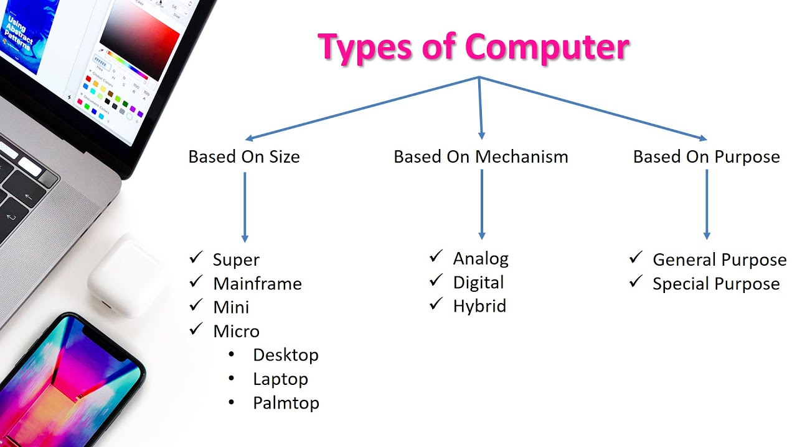
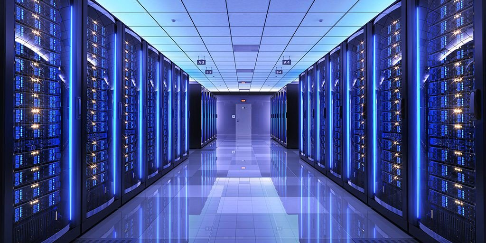
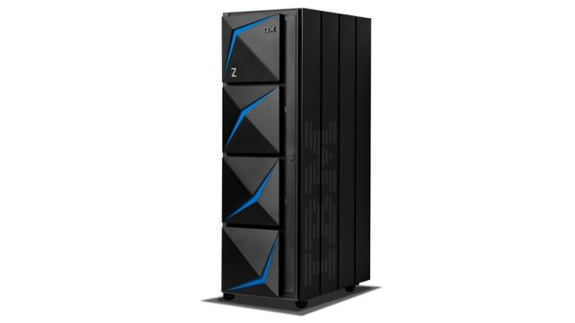
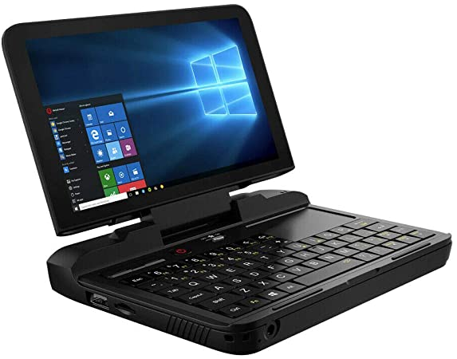
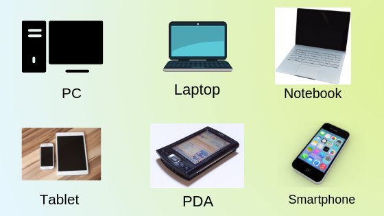
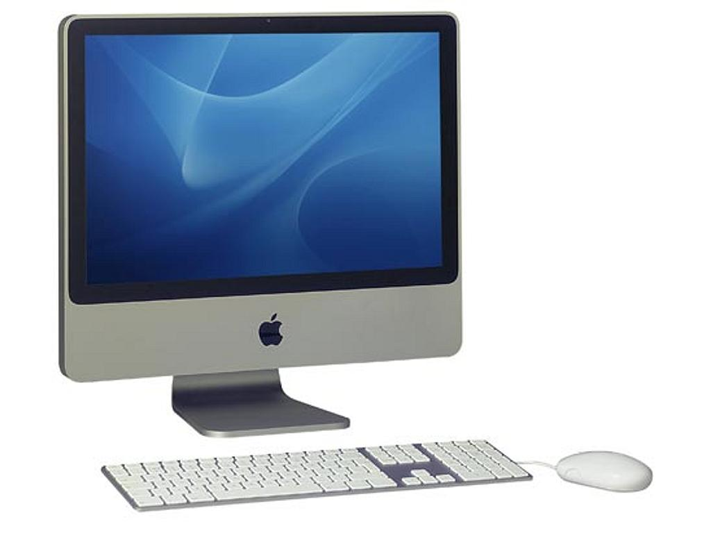
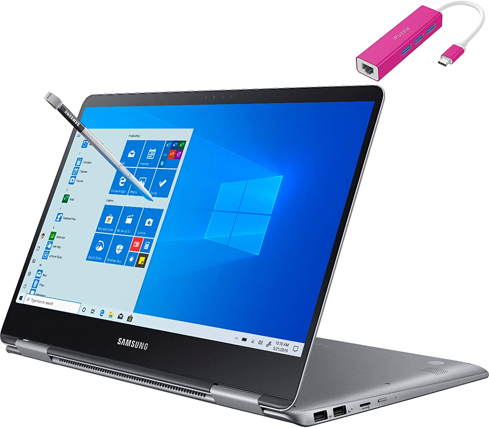
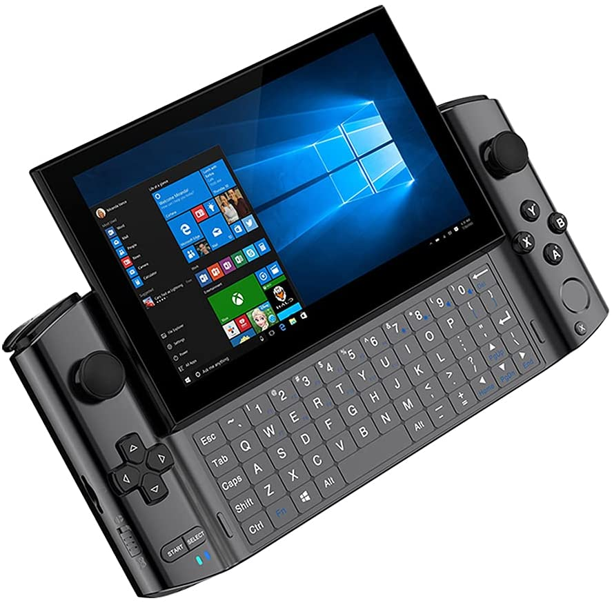
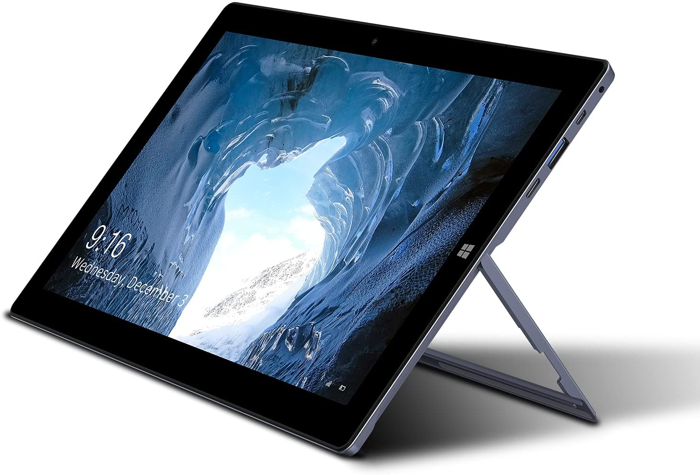

A computer is a machine that can store and process information. Most computers rely on a binary system, which uses two variables, 0 and 1, to complete tasks such as storing data, calculating algorithms, and displaying information.
A computer is a programmable device that stores, retrieves, and processes data. The term "computer" was originally given to humans (human computers) who performed numerical calculations using mechanical calculators, such as the abacus and slide rule. The term was later given to mechanical devices as they began replacing human computers. Today's computers are electronic devices that accept data (input), process that data, produce output, and store (storage) the results (IPOS).
Types of Computers

- SuperComputer
- Mainframe computer
- Workstation
- Minicomputer
- Microcomputers:
- Desktop
- Notebook
- Handheld
- Tablet PC
SuperComputers

supercomputer, any of a class of extremely powerful computers. The term is commonly applied to the fastest high-performance systems available at any given time. Such computers have been used primarily for scientific and engineering work requiring exceedingly high-speed computations.
A supercomputer is not simply a fast or very large computer: it works in an entirely different way, typically using parallel processing instead of the serial processing that an ordinary computer uses. Instead of doing one thing at a time, it does many things at once
Mainframe Computers

A mainframe computer, informally called a mainframe or big iron, is a computer used primarily by large organizations for critical applications like bulk data processing for tasks such as censuses, industry and consumer statistics, enterprise resource planning, and large-scale transaction processing
There are some companies, which are used to mainframe computer system such as Wallmart, HSBN, Indial Railways, ICICI and HDFC banks, Tesco, Kenya Power, Vodafone, AIG, Coca Cola, RBI, DHL, FORD, NASDAQ, Nike, Tata, Travelport, UPS, USA Pstal Services, and more.
Workstation

A workstation is a special computer designed for technical or scientific applications. Intended primarily to be used by a single user, they are commonly connected to a local area network and run multi-user operating systems
A powerful Windows PC that can be used to run complex database programs is an example of a workstation. A cubicle where you perform your job is an example of a workstation. A desktop computer, normally more powerful than a normal PC and often dedicated to a specific task, such as graphics.
Minicomputer

A minicomputer, or colloquially mini, is a class of smaller general purpose computers that developed in the mid-1960s and sold for much less than mainframe and mid-size computers from IBM and its direct competitors
minicomputer, computer that was smaller, less expensive, and less powerful than a mainframe or supercomputer but more expensive and more powerful than a personal computer. Minicomputers were used for scientific and engineering computations, business transaction processing, file handling, and database management.
Micro computer

A microcomputer is a small, relatively inexpensive computer having a central processing unit made out of a microprocessor.
A microcomputer is a complete computer on a small scale, designed for use by one person at a time. An antiquated term, a microcomputer is now primarily called a personal computer (PC), or a device based on a single-chip microprocessor. Common microcomputers include laptops and desktops.
Types of Micro Computers
Desktop

A desktop computer is a personal computer designed for regular use at a single location on or near a desk due to its size and power requirements.
A desktop is a computer display area that represents the kinds of objects one might find on top of a physical desk, including documents, phone books, telephones, reference sources, writing and drawing tools, and project folders.
Notebook

A notebook computer is a battery- or AC-powered personal computer generally smaller than a briefcase that can easily be transported and conveniently used in temporary spaces such as on airplanes, in libraries, temporary offices, and at meetings. A notebook computer, sometimes called a laptop computer, typically weighs less than 5 pounds and is 3 inches or less in thickness. Among the best-known makers of notebook and laptop computers are IBM, Apple, Compaq, Dell, Toshiba, and Hewlett-Packard.
Notebook computers generally cost more than desktop computers with the same capabilities because they are more difficult to design and manufacture. A notebook can effectively be turned into a desktop computer with a docking station, a hardware frame that supplies connections for peripheral input/output devices such as a printer or larger monitor. The less capable port replicator allows you to connect a notebook to a number of peripherals through a single plug they usually come with displays that use thin-screen technology.
Handheld

A handheld computer is a computer that can conveniently be stored in a pocket (of sufficient size) and used while you're holding it. Today's handheld computers, which are also called personal digital assistants (PDAs), can be divided into those that accept handwriting as input and those with small keyboards. The original handheld that accepted handwriting was Apple's Newton, which was later withdrawn from the market. Today, the most popular handheld that accepts handwritten input is the PalmPilot from 3Com. Philips, Casio, NEC, Compaq, and other companies make handhelds with small keyboards.
Handheld computers are typically used for personal information manager (PIM) types of applications: maintaining schedules, keeping names and phone numbers, doing simple calculations, taking notes, and, with a modem, exchanging e-mail and getting information from the Web. Keyboards have tiny keys that take getting used to. Those that handle handwriting also impose constraints and require some learning. Nevertheless, this class of computer is widely sold and appreciated by many users.
Tablet PC

A tablet is a wireless, portable personal computer with a touchscreen interface. The tablet form factor is typically smaller than a notebook computer, but larger than a smartphone.
Today, the most common type of tablet is the slate style, like Apple's iPad, Microsoft's Surface or Amazon's Kindle Fire. External keyboards are available for most slate-style tablets, and some keyboards also function as docking stations for the devices.